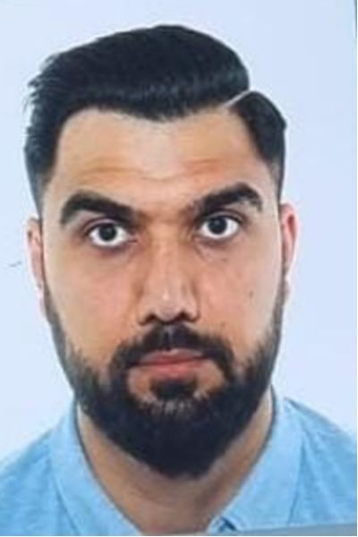

I am an undergraduate student at Laurea University of Applied Sciences, specializing in Business Information Technology with a focus on Digital Services. Passionate about frontend development, I am eager to apply my coding skills to real-world projects. My strong work ethic, teamwork abilities, and problem-solving mindset make me a valuable contributor to any team.
Education
Bachelor's Degree in Business Information Technology - Digital Services (2021-2026)
Laurea University of Applied Sciences, Finland
Work Experience
- Translator - Saviiare Oy
- Translated books and articles from Farsi and Pashto to English and Finnish
- Updated and edited articles related to climate change
- Security Guard
- Provided customer service with a focus on safety and security
- Responded to security alarms and incidents across various locations
- Collaborated with security centers to prevent and address criminal activities
Skills
- Frontend Development (HTML, CSS, JavaScript - Learning)
- Microsoft Office Suite (Word, Excel, PowerPoint)
- Business Startup and Project Management
- Basketball Coaching and Team Leadership
Awards and Certifications
- Best Basketball Player of the Year - 2024, EBT Basketball
- Certification in Project Management - LinkedIn Learning